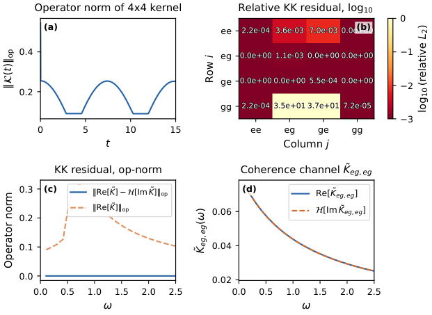
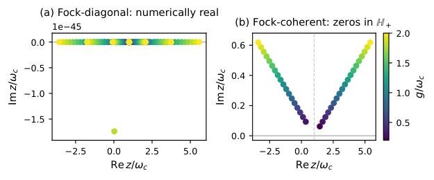

Paper-specific deductions about Hardy placement, Kramers–Kronig relations and rational pole obstructions are formalized in Lean 4 with Mathlib, taking named classical analytic results as inputs.
Abstract
Retarded support, upper-half-plane holomorphy, and Hardy boundary control are distinct properties of a memory kernel. We give sufficient conditions linking them for the Nakajima–Zwanzig kernel of an open system with finite-dimensional system Liouville space. If the projected kernel has an absolutely continuous real-axis representation with density w in L1 intersect Lp0, no singular part, and p0 > 1, its transform lies in the operator-valued Hardy class Hp(B) for 1 < p <= p0. A finite-dimensional componentwise argument yields the corresponding principal-value and once-subtracted Kramers–Kronig (KK) boundary formulas; the H1 endpoint is separate. Microscopic unitary evolution gives holomorphy and a trace-norm bound for reduced-state transforms for arbitrary trace-class initial states, without that spectral hypothesis. On a common analytic domain, a perturbative force-fit equation has a first-order quotient pole at a simple baseline state-transform zero zeta only when the first-order inhomogeneous numerator I_tilde^(1)(zeta) is nonzero; at finite perturbation the actual zero and numerator must be checked, while matrix reconstructions additionally require adjugate non-cancellation. For rational reconstructions, the printed local or global clearing and no-cancellation hypotheses convert a rational kernel pole into a genuine upper-half-plane propagator pole. Such a pole is incompatible with a uniformly bounded CPTP family when the transforms agree on an open set, with Vieta's formula giving the imaginary-part budget. We formalize these paper-specific implications in Lean 4 from named classical inputs. A finite Jaynes–Cummings calculation provides a shifted, distributional KK check with a 0.024 percent fixed-truncation residual.
Problem
Kramers–Kronig relations have not been rigorously developed for Nakajima–Zwanzig memory kernels of open quantum systems. Retarded support, upper-half-plane holomorphy and Hardy boundary control are distinct properties, and each needs its own hypotheses.
Approach
Under an absolutely continuous real-axis spectral representation with density in L1∩Lp0, the projected kernel transform is placed in an operator-valued Hardy class Hp. Principal-value and once-subtracted KK formulas follow componentwise. State-transform analyticity for arbitrary trace-class initial states, force-fit pole conditions, and a CPTP obstruction for uncancelled rational poles (via Rouché and Vieta) are also derived. The paper-specific implications are machine-checked in Lean 4 with Mathlib from explicitly named classical inputs, with a pinned environment and a public repository.
Results
The work gives sufficient conditions for Hp membership and the KK relations, and shows that uncancelled upper-half-plane rational poles are incompatible with uniformly bounded CPTP dynamics. A finite Jaynes–Cummings shifted distributional KK check has a 0.024% fixed-truncation residual.

Figure 2: Shifted-line operator-valued KK consistency check for the finite JC model ( \omega_{0}=\omega_{c}=1 , g=0.3 , N_{\max}=10 , N_{t}=4000 , t_{\max}=60 , \varepsilon=0.3 ). (a) Operator norm \|\mathcal{K}(t)\|_{\mathrm{op}} of the extracted 4 \times 4 NZ memory kernel. (b) Elementwise relative KK residual ( \log_{10} scale) across all 16 matrix elements. (c) Operator-norm KK residual \|\ope

Figure 1: Zeros of the coherence-channel transform \tilde{\sigma}_{0}^{(eg)}(z) for a finite Jaynes–Cummings model ( N_{\max}=2 , \omega_{0}=\omega_{c}=1 ), with initial system state |+\rangle\langle+| and a 20-point coupling grid g/\omega_{c}\in[0.1,2.0] . (a) Fock-diagonal bath : the truncated thermal state with \beta\omega_{c}=1 gives zeros on the real axis within the working precision througho